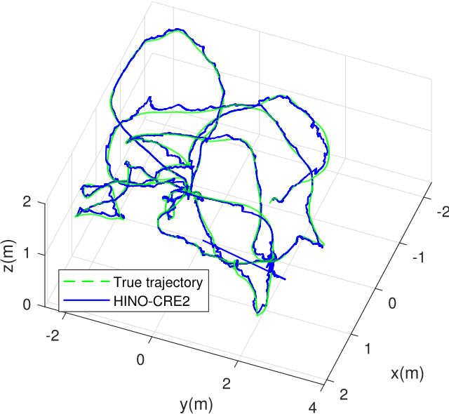
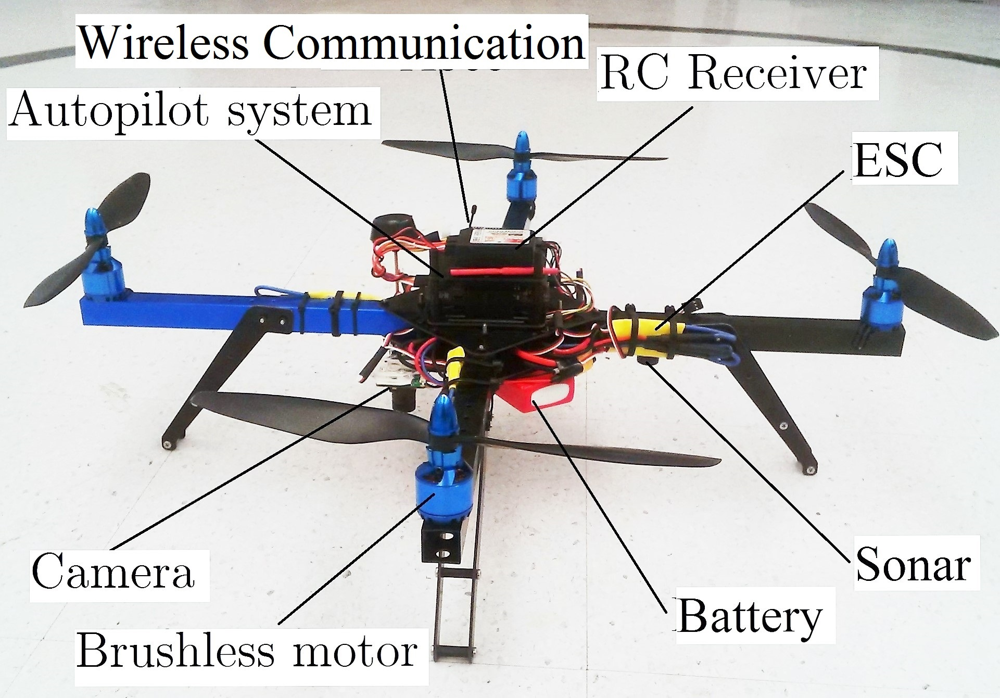
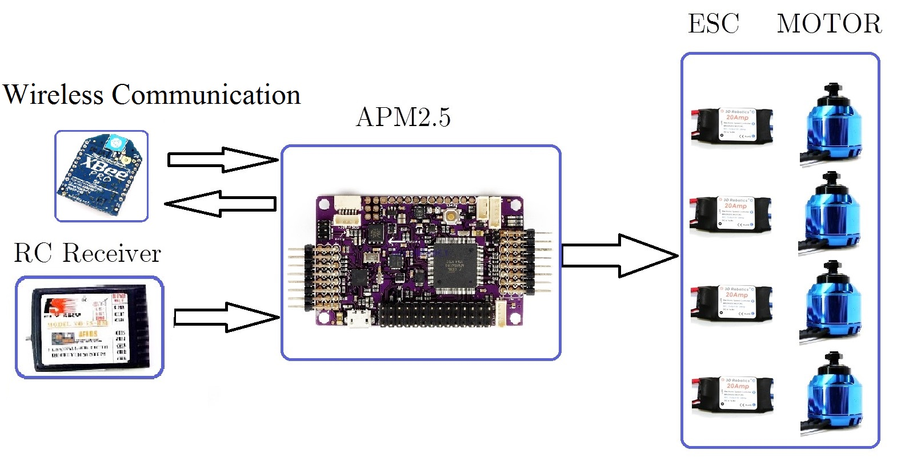
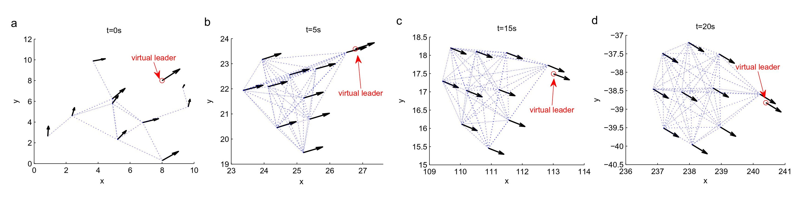

Menu
Home
Publications
Research
Award & Services
Links
Google scholar
ResearchGate
ORCID
Research
Visual Inertial Navigation

We address the problem of state estimation for inertial navigation using landmark measurements.
Attitude control of a quadrotor UAV
 
Flocking of multiple agent system
